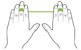
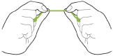
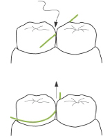

치아 사이를 닦는 치실
치아와 치아 사이에 음식물이 끼면 흔히 이쑤시개를 사용합니다. 습관적인 이쑤시개 사용은 치간 사이가 넓어지고, 자칫 잇몸에 염증을 야기하기도 합니다. 치실은 잇몸에 상처를 내지 않고 치아 사이를 닦을 수 있습니다.
치실은 하루 몇 번?
하루 세 끼 식사 후 양치질 후에 치실을 사용하는 것이 가장 바람직하지만, 현실적으로 쉽지 않으므로 자기 전 1회 치실질을 사용하는 것도 적당합니다.
치실 습관을 가져야 하는 사람
- 이 사이가 벌어져 있어 음식물이 쉽게 끼는 사람
- 잇몸 질환이 있는 사람
- 치열이 고르지 않은 사람
- 보철물·임플란트를 한 사람
치실 사용은 이렇게
- 전체 치아에 치실을 사용할 경우,치실을 40~50cm길이로 자릅니다.
-

가운데 손가락에 치실 길이가 5~10 cm가 될 때까지 감습니다. -

엄지와 검지를 이용해 2~3cm가 되게 짧게 잡습니다 -

치아 사이에 치실을 톱질하듯이 밀어 넣고, 치아를 C자 모양을 감싸듯이 둘러 잇몸 속 깊숙이 넣습니다. 아래에서 위로 튕기듯이 닦아주는 과정을 3~4회 반복합니다.
출처: 헬스 조선